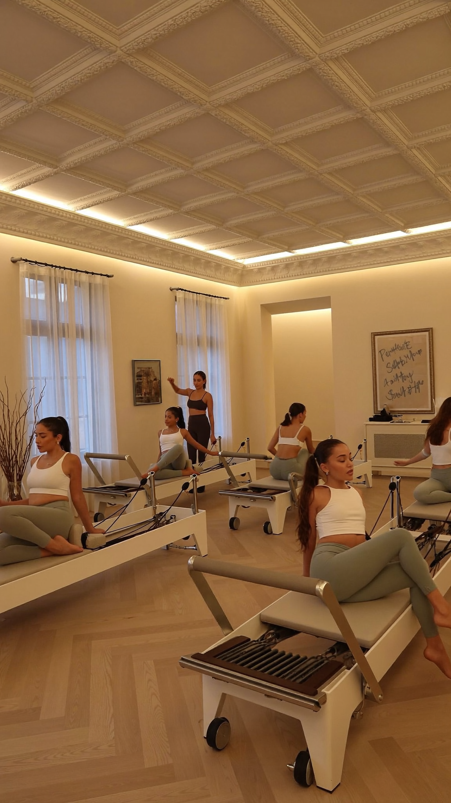
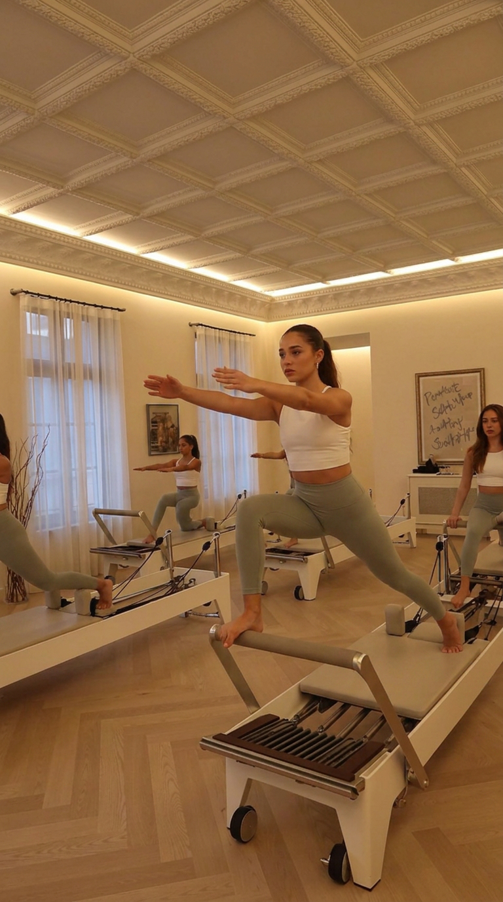
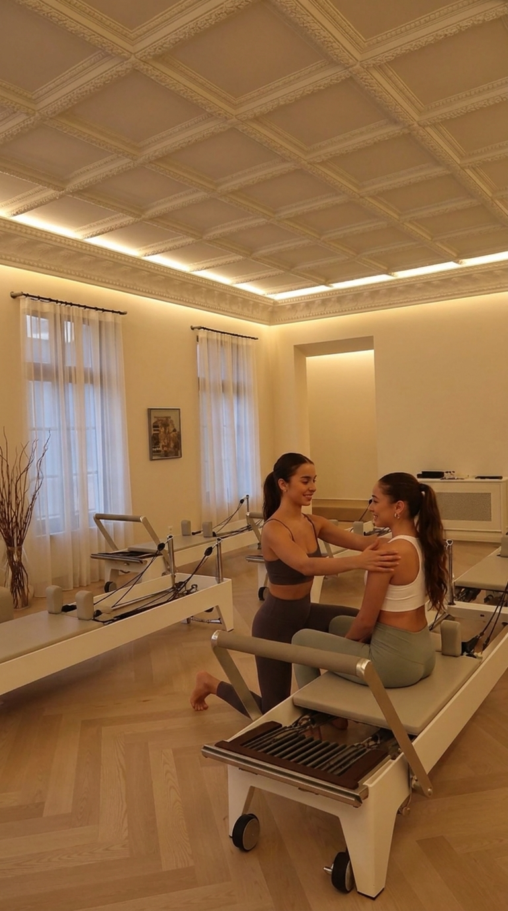
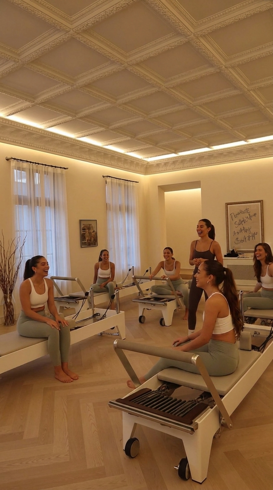

STEPS KIDS · פולג נתניה
דברים שקורים בשיעור
נערות פילאטיס 💚
תרגילים אמיתיים —
מתחזקות ומיישרות גב
ליווי צמוד —
כל אחת על המכשיר שלה
והכי כיף —
יוצאות עם חיוך 😂
STEPS KIDS
פילאטיס מכשירים · נערות 12–15
קבוצות קטנות · פולג, נתניה
אימון היכרות 👇